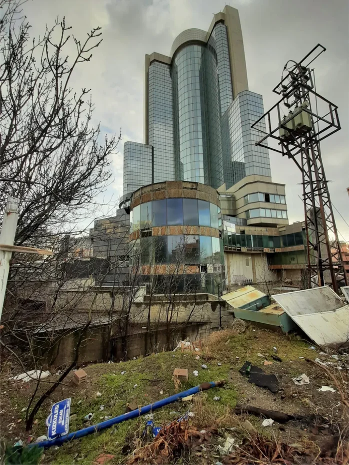

Abandoned Buildings' Effects on Soil Composition

How does the prolonged abandonment of 'The Grand Çankaya Hotel' affect localized soil, and how do these effects reshape the relationship between urban space and soil?
The approximately 30-year abandonment of the unfinished Grand Çankaya Hotel has contributed to soil contamination through the leaching, weathering, and corrosion of its construction materials, producing concentrations and spatial distributions of heavy metals and alkaline compounds that may differ from Ankara's urban background pollution levels, while simultaneously transforming the relationship between urban space and soil and intersecting with the site's evolving role within Ankara's urban memory as an idle structure.
This study investigates the soil changes that may have occurred because of the deterioration of building materials during the approximately 30-year period of abandonment of the Grand Çankaya Hotel. Concrete dissolution, reinforcement corrosion, and pollutants that can be carried by groundwater networks are analyzed using literature data to examine the long-term relationship between the structure and the surrounding soil system. Potential material and heavy metal concentrations in the soil are visualized on the existing cross-section, and the extent to which the environmental impacts of the building's point presence can spread over a wide area is investigated through an impact area diagram created towards the valley in the reverse expressive section. The data obtained are represented through diagrams, timelines, and cross-sectional drawings.
This research, "Abandoned Buildings' Effects on Soil Composition: The Grand Çankaya Hotel Case," examines the effects of the nearly thirty-year abandonment of the Grand Çankaya Hotel, which is a significant landmark in Ankara's urban memory, on the surrounding soil system. The abandoned structure is considered not only as a physical urban object but also as an actor for transforming environmental and ecological processes of that area. The study aims to investigate the relationship between the building's long-term abandonment and soil composition, water movements, and the urban environment.
The main purpose of this research is emphasizing the long-term physical and chemical interactions between idle structures in urban context and soil from a specific case. The leaching of calcium components from the concrete material of the building into the soil over time leads to an increase in pH levels and alkalization, while iron oxides and various heavy metals can enter the surrounding soil as a result of the corrosion of reinforcing steel. These interactions and processes affect soil chemistry, microbial activity, and plant growth, leading to the formation of a unique ecological environment around the structure.
The study also evaluates the relationship between the Grand Çankaya Hotel and the underground water systems and existing water channels of the region. The building's location on the water flow routes connected to the Kavaklıdere Stream and Papazın Bağı indicates that the chemical and physical effects originating from the building may not be limited to its immediate surroundings but may extend to a wider area. This highlights that the environmental impacts of abandoned structures should be considered as dynamic processes that can spread across time and space.
The project proposes a reinterpretation of the Grand Çankaya Hotel not merely as a failed or idle construction, but as an environmental entity that transforms the land over time and interacts with Ankara's urban memory. The processes of deterioration, corrosion, and disintegration that occurred during the building's period of abandonment make visible the relationships between land, water, and the city, offering an alternative research framework for the intersections of architecture, ecology, and urban memory.